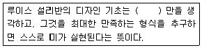
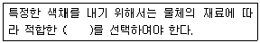
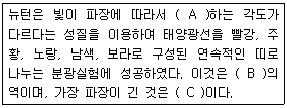
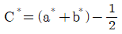
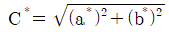
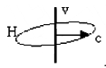

컬러리스트산업기사 (2011-08-21 기출문제)
1과목: 색채심리
1. 다음 중 색채의 배색 효과에 있어서 가장 부드럽고 유아적인 느낌을 갖는 색채배색은?
- deep tone의 배색
- dark tone의 배색
- grayish tone의 배색
- pale tone의 배색
(정답률: 82%)

2. TV 리모트 컨트롤러의 효과적인 색채계획 시 가장 고려해야 할 것은?
- 기능정보
- 보편적 색채
- 상징적 의미
- 선호색
(정답률: 알수없음)
3. 심리학, 생리학, 미학 등에 근거하여 과학적으로 색채를 사용하는 것과 관계가 적은 용어는?
- 색채조절
- 색채대비
- 색채관리
- 색채계획
(정답률: 47%)
4. 2색 이상의 배색을 되풀이하여 일정한 질서에 따른 조화를 주는 방법으로 통일감과 융화성을 높여주는 배색 효과는?
- Accent
- Repetition
- Gradation
- Separation
(정답률: 알수없음)
5. 다음 색채 중 가장 후퇴되어 보이는 것은?
- 5PB 7/4
- 5R 2/2
- 5G 5/8
- 5P 4/6
(정답률: 50%)
6. 오방색과 의미론적 상징성의 연결이 틀린 것은?
- 파랑 - 나무(木) - 남(南) - 주작(朱雀)
- 노랑 - 흙(土) - 중앙(中央) - 황용(黃龍)
- 하양 - 쇠(金) - 서(西) - 백호(白虎)
- 검정 - 물(水) - 북(北) - 현무(玄武)
(정답률: 80%)
7. 높은 음을 색채로 표현할 때 어두운 색보다 밝고 강한 채도의 색을 사용하는 것이 효과적이다. 이는 다음의 어떤 현상에 해당하는가?
- 공감각
- 연상
- 경연감
- 무게감
(정답률: 알수없음)
8. 동서양의 문화에 따른 색채 정보의 활용이 잘못된 예는?
- 동양의 신성시되는 종교색 - 노랑
- 중국의 왕권을 대표하는 색 - 노랑
- 봄과 생명의 탄생 - 녹색
- 평화, 진실, 협동 - 자주
(정답률: 알수없음)
9. 색채와 라이프스타일의 특성에 대한 설명 중 적절하지 않은 것은?
- 색에 대한 일반적인 선호 경향과 특정제품에 대한 선호색은 일치한다.
- 자동차에 대한 선호색은 각 지역의 자연환경 및 생활패턴 등에 따라 차이가 있다.
- 색채 선호의 연령 차이는 인종, 국가를 초월하여 거의 비슷한 경향을 보인다.
- 색채와 라이프스타일의 관계는 변화에 따라 끊임없이 변화한다.
(정답률: 50%)
10. 5가지 색을 배색할 때 색채의 속성인 색상, 명도, 채도 중 한 가지 혹은 두 가지를 단계적으로 변화시켜 만드는 배색은?
- 단절적 배색
- 점진적 배색
- 심층적 배색
- 음률적 배색
(정답률: 알수없음)
11. 연령이 낮을수록 원색계열과 밝은 톤을 선호하다가 성인이 되면서 단파장의 파랑, 녹색을 점차 좋아하게 되는 색채 선호도 변화의 이유는?
- 자연환경의 차이
- 기술 습득의 증가
- 지적능력의 증대
- 인문환경의 영향
(정답률: 50%)
12. 다음 중 샌드위치 상점의 인테리어 컬러 선정 시 신선한 재료의 사용을 부각시키려 할 때 주조색으로 가장 적절한 색채는?
- 5YR 5/10
- 5G 5/10
- 5YR 8/2
- 5G 8/2
(정답률: 알수없음)
13. 어느 특정한 색채가 주변색채의 영향을 받아 본래의 색과는 다른 색채로 지각되는 경우는?
- 혼색효과
- 강조색 배색
- 현속배색
- 대비효과
(정답률: 알수없음)
14. 색채의 형태감에 대한 내용 중 틀린 것은?
- 빨강은 정사각형으로 지각된다.
- 노랑은 역삼각형으로 지각된다.
- 보라는 마름모 형태로 지각된다.
- 초록은 육각형으로 지각된다.
(정답률: 알수없음)
15. 병원의 색채계획에 있어서 가장 적절한 것은?
- 일반적으로 크림색을 벽에 사용한다.
- 회복시 환자에게는 어두운 조명과 시원한 색이 적합하다.
- 휴식을 요하거나 만성 환자는 밝은 조명과 따뜻한 색채가 적합하다.
- 입원실은 환자의 시각과 감정의 위안을 위해 벽면 색채를 모두 통일한다.
(정답률: 50%)
16. 가시 스펙트럼에서 570 ~ 580mm 사이에 있으면, 안전색채에서는 '조심'의 뜻을 지니는 색은?
- 파랑
- 빨강
- 노랑
- 주황
(정답률: 알수없음)
17. 사람의 소리와 색채에 관한 설명 중 틀린 것은?
- 똑똑한 말소리 : 선명하고 높은 채도
- 다정한 대화 : 무채색 계통의 색
- 우물쭈물한 말소리 : 흐릿하고 낮은 채도
- 냉랭한 대화 : 푸른 계통의 색
(정답률: 알수없음)
18. 다음 중 환경 색채의 영향으로 틀린 것은?
- 지역의 자연적이고 인공적인 특성을 형성한다.
- 시각적, 공감각적, 상징적, 관념적, 감성적, 생리학적 영향을 준다.
- 의식적, 무의식적 행동을 유발한다.
- 지역의 거주자에게 영향을 주지 않는다.
(정답률: 알수없음)
19. 각 지역의 색채기호에 관한 내용 중 틀린 것은?
- 중국에서는 적색이 행운과 존엄을 의미한다.
- 이슬람교도들은 황색을 종교적인 색채로 좋아한다.
- 아프리카 토착민들은 일반적으로 강렬한 순색을 좋아한다.
- 라틴아메리카에서는 난색 계의 선명한 색상을 좋아한다.
(정답률: 67%)
20. 각각 같은 면적인 3색 배색을 하고자 한다. 화려하지 않고 수수한 분위기의 배색을 하려면 다음에 제시된 배색 중 어느 것이 가장 적절할까?
- 흐린 빨강 (5R 6/2) + 회 파랑 (7.5B 5/1.5) + 흐린 노랑 (2.5 Y 8/2)
- 흐린 빨강 (5R 6/2) + 회 파랑 (7.5B 5/1.5) + 진한 청록 (5BG 7/8)
- 회 파랑 (7.5B 5/1.5) + 흐린 노랑 (2.5 Y 8/2) + 밝은 노랑(5Y 8/6)
- 흐린 노랑 (2.5Y 8/2) + 밝은 노랑 (5Y 8/6) + 밝은 빨강 (5R 7/4)
(정답률: 77%)
2과목: 색채디자인
21. 환경디자인에 있어서 경관에 대한 설명 중 틀린것은?
- 경관은 원경 - 중경 - 근경으로 나누어진다.
- 동적 경관은 시퀀스(Sequence), 정적 경관은 신(Scene)으로 표현된다.
- 경관은 시각적, 공간적 연속성으로 파악해야 한다.
- 경관디자인은 지역특성의 부각과 무관하다.
(정답률: 73%)
22. 다음 ( ) 안에 가장 적절한 말은?

- 가치
- 기능
- 이미지
- 욕구
(정답률: 알수없음)
23. 색체정보 수집방법으로 가장 용이한 표본조사법의 표본 추출방법이 잘못된 것은?
- 표본은 무작위로 뽑아야 한다.
- 표본의 선정은 올바르고 정확하며 편차가 없는 방식으로 한다.
- 표본선정은 연구자가 대규모의 모집단에서 소규모의 표본을 뽑아야 한다.
- 표본은 모집단을 모두 포괄한 목록을 가지고 있을 필요는 없다.
(정답률: 50%)
24. '집은 살기 위한 기계이다' 라고 말한 사람은?
- 월터 크로피우스(Walter Gropius)
- 르 코르뷔지에(Le Corbusier)
- 안토니 가우디(Anthony Gaudi)
- 프랭크 로이드 라이트(Frank Lloyd Wright)
(정답률: 알수없음)
25. 절대주의(Suprematism)의 대표적인 러시아 예술가는?
- 칸디스키(Wassily Kandinsky)
- 타틀린(V. Tatlin)
- 로도첸코(Aleksandr M. Rodchenko)
- 말레비치(k. Malevich)
(정답률: 알수없음)
26. 디자인의 조건 중 시대성, 사회성, 민족성과 관계있는 것은?
- 합목적성
- 경제성
- 심미성
- 질서성
(정답률: 알수없음)
27. 좋은 디자인으로 평가되기 위한 조건들에 대한 설명이 아닌 것은?
- 일정한 목적에 도달하기에 적합한 대상 또는 행위의 성질
- 한정된 경비로 최상의 디자인을 창출
- 항상 창조적이면 이상을 추구해야 하는 본질에 기인할 때 그 가치를 인정
- 감정적이며 비합리적인 요소는 배제시키고 순수하게 합리적 요소만을 형성
(정답률: 34%)
28. 라틴어 동사인 designare에서 유래한 디자인의 기본적인 뜻은?
- 추구하다
- 완성하다
- 계획하다
- 색칠하다
(정답률: 70%)
29. 코닥 칼라의 노란색은 다음 중 어느 것의 성공적인 사례인가?
- Illustration
- Pictogram
- C. I. P (Corporation Identity Program)
- M. I. (Mind Identity)
(정답률: 82%)
30. 지면이나 직물 등에 전달할 내용을 한 눈에 알 수 있도록 표현하는 광고 매체는?
- 신문
- 잡지
- TV
- 포스터
(정답률: 알수없음)
31. 색채수요의 상황과 색채 마케팅의 대응을 잘못 연결한 것은?
- 잠재적 색채수요 : 색채수요의 개발
- 불규칙한 색채수요 : 색채의 수요시기와 공급시기 일치
- 완전한 색채수요 : 색채수요 유지
- 초과한 색채수요 : 색채수요의 확대
(정답률: 알수없음)
32. 패션에서의 색채 이미지 특성 중 옳은 것은?
- 색의 3차원적 속성에 따라 형성되고 그 속성에 따라 미묘한 차이를 나타낸다.
- 패션 색채는 보편성의 의미를 갖지 않고 개성연출이 주된 분야이다.
- 질감 등이 우선되면 색채는 질감의 다음 중요도 순이 된다.
- 단색의 효과가 여러 색의 배색효과보다 의미 전달이 빠르고 좋다.
(정답률: 알수없음)
33. 모던 디자인의 특징을 옳게 설명한 것은?
- 유기적 곡선 형태를 추구한다.
- 영국의 미술공예운동에 기초를 둔다.
- 사물의 형태는 그 역할과 기능에 따른다.
- 1880년부터 1차 세계대전까지의 디자인 사조이다.
(정답률: 알수없음)
34. 기업은 제품에 대한 수요에 영향을 주기 위해 소비자를 자극 할 수 있는 모든 수단을 활용한다. 기업이 활용하는 마케팅 자극(4P)이 아닌 것은?
- 제품 (Product)
- 판매시기 (Period)
- 판매촉진 (Promotion)
- 가격 (Price)
(정답률: 알수없음)
35. 면의 형성 중 적극적인 면 (positive - plane)과 관련이 없는 것은?
- 점의 확대
- 선의 이동
- 선의 집합
- 너비의 확대
(정답률: 알수없음)
36. 다음 중 곡선에 대한 설명이 틀린 것은?
- 점의 방향이 끊임없이 변할 때에는 곡선이 생긴다.
- 곡선은 우아, 매력, 모호, 유연, 복잡함의 상징이다.
- 기하곡선은 분방함과 풍부한 감정을 나타낸다.
- 포물선은 속도감, 쌍곡선은 균형미를 연출한다.
(정답률: 알수없음)
37. 마케팅 전략은 크게 직감적 전략, 분석적 전략 그리고 무엇으로 구분되는가?
- 감각적 전략
- 전통적 전략
- 통합적 전략
- 이미지 전략
(정답률: 알수없음)
38. 피부색에 따른 메이크업 베이스 화장품의 색상 선택이 옳은 것은?
- 녹색계 - 붉거나 여드름 자국 등 잡티가 있을 때
- 보라계 - 창백한 피부에 혈색을 부여할 때
- 오렌지계 - 피부를 희게 할 때
- 핑크계 - 얼굴의 붉은 기운을 커버하고자 할 때
(정답률: 알수없음)
39. 주택의 색채계획에 관한 설명으로 틀린 것은?
- 거실은 가족 단란의 분위기를 형성하기 위해 크림색, 베이지, 밝은 황갈색을 주조색으로 하였다.
- 침실의 베개와 쿠션은 액센트 요소로 강한 톤을 사용하였다.
- 욕실은 위생적인 이미지를 주는 흰색이나 청색을 조화시켜 사용하였다.
- 부엌의 작업대 상판은 음식물의 색을 선명하게 보이도록 저명도의 색으로 하였다.
(정답률: 알수없음)
40. 색채조절의 효과에 대한 설명이 틀린 것은?
- 눈의 피로를 막아주고, 자연스럽게 일할 기분이 생긴다.
- 조명의 효율과 관계없지만 건물을 보호, 유지하는 데 좋다.
- 일에 주의가 집중되고 능률이 오른다.
- 안전이 유지되고 사고가 줄어든다.
(정답률: 알수없음)
3과목: 섹채관리
41. 다음 ( )안에 들어갈 용어는?

- Colorant
- color gamut
- primary colors
- CMS
(정답률: 알수없음)
42. 수치 데이터를 이용하거나 주어진 색표를 가지고 색을 만드는 작업을 무엇이라 하는가?
- 염료
- 안료
- 조색
- 색소
(정답률: 90%)
43. 다음 중 출력기기가 아닌 것은?
- Plotter
- Motion Capture
- Virtual Workbench
- Film Recoder
(정답률: 알수없음)
44. 다음 중 먼셀 색표를 관찰할 때, 가장 적절한 표준 광원은?
- A 광원
- B 광원
- C 광원
- D 광원
(정답률: 알수없음)
45. CIE 1960 UCS 색도 그림 위에서 완전 방사체 궤적에 직교하는 직선 또는 이것을 다른 적당한 색도 그림 위에 변환시킨 것은?
- 상관 색 온도
- 등색온도선
- 주광 궤적
- 역수 상관 색온도
(정답률: 알수없음)
46. 필터식 색채계의 측정값에 대한 설명으로 옳은 것은?
- 특정 광원에 대한 삼자극치
- 특정 시야에 의한 각 광원별 색좌표
- 특정 광원에 대한 분광반사율
- 특정 광원들에 대한 연색지수
(정답률: 알수없음)
47. 측색장치로 색채를 측정했을 때 반드시 표기해야 할 사항은?
- 측색의 기준 표준광
- 색채계의 분광분해능
- 색채계의 교정주기
- 측정 작업자 성명
(정답률: 알수없음)
48. 빨간색 토마토는 다음 중 어느 광원에서 가장 색채가 생생하게 보일까?
- 형광등
- 백열등
- 수은등
- 나트륨등
(정답률: 70%)
49. 다음 중 염료와 색이 잘못 짝지어진 것은?
- 인디고 - 파란색
- 모브 - 보라색
- 플라보노이드 - 노란색
- 안토시아닌 - 초록색
(정답률: 알수없음)
50. 다음 조명 방식 중에서 눈부심이 가장 적은 것은?
- 직접조명
- 반직접조명
- 간접조명
- 반간접조명
(정답률: 알수없음)
51. 베지어 곡선을 이용하여 표현한 것으로 이미지가 확대되거나 축소되어도 이미지 정보가 그대로 보존되며 용량도 적은 이미지 표현 방식은?
- 벡터 방식 이미지(vector image)
- 래스터 방식 이미지(raster image)
- 픽셀 방식 이미지(pixel image)
- 비트맵 방식 이미지(bitmap image)
(정답률: 80%)
52. 다음의 색온도 중 가장 푸른 빛을 띠는 것은?
- 2700K
- 4000K
- 6000K
- 9000K
(정답률: 알수없음)
53. CIE에서 결정한 표준 및 보조 표준 광원의 색온도에 들지 않는 것은?
- 약 2856 K
- 약 4874 K
- 약 6774 K
- 약 8768 K
(정답률: 알수없음)
54. 사진, 그림 등의 이미지나 인쇄물 등에서 밝은 부분과 어두운 부분의 중간조 회색부분으로 적당한 크기와 농도의 작은 점들로 명암의 미묘한 변화가 만들어지는 표현방법은?
- 영상처리(image processing)
- 컬러 매칭(color matching)
- 캘리브레이션(calibration)
- 하프톤(halftone)
(정답률: 알수없음)
55. normal/45(0/45) 측색기 구조에서 조명을 입사시키는 각도와 물체에 의해 반사된 빛을 수광하는 측정 각이 옳게 짝지어진 것은?
- 0도 조명 - 45도 수광
- 45도 조명 - 0도 수광
- 모든 각도에서 조명 - 45도 수광
- 45도 조명 - 모든 각도로 수광
(정답률: 60%)
56. 색영역 맵핑(Color gram mapping)에 대한 설명중 틀린 것은?
- 입력장치와 출력장치의 색공간이 서로 다른 경우에 적용된다.
- 입력장치와 출력장치의 색공간이 일치하지 않은 색들은 맵핑에서 제외된다.
- 입력장치의 컬러공간이 출력장치의 컬러공간과 매치된다.
- 색영역 맵칭은 색체를 다루는 디바이스의 다양화와 함께 재현되는 색채의 품질을 좌우한다.
(정답률: 알수없음)
57. 색채 측정 장치와 특성에 관한 설명으로 틀린 것은?
- 시료대는 광원과 시료를 장착하고 반사광을 모으는 장치이다.
- 분광식 색채계는 기준광로의 유무에 따라 이중 빔 방식과 단일 빔 방식으로 구분된다.
- 짧은 파장의 빛이 입사하여 긴 파장의 빛을 복사하는 형광현상이 있는 시료에는 전방(monochromatic) 방식이 적합하다.
- 이중 빔 방식은 적분구에 비춰지는 기준광과 시료에 의한 반사광을 교대로 측정하여 광원의 강도가 변하더라도 정확한 측정을 할 수 있다.
(정답률: 알수없음)
58. CCM 에서 배합비를 계산하는 K와 S에 대한 설명으로 옳은 것은?
- K : 빛의 흡수 계수, S : 빛의 산란 계수
- K : 빛의 산란 계수, S : 빛의 반사 계수
- K : 빛의 흡수 계수, S : 빛의 반사 계수
- K : 빛의 산란 계수, S : 빛의 흡수 계수
(정답률: 55%)
59. 각 색들의 분광학적인 특성들을 분석하여 입력하여 발색을 원하는 색채샘플의 분광반사율을 입력하여, 그 색채에 대한 배색처방을 자동적으로 산출하는 시스템은?
- 컴퓨터 자동배색(Computer Color Matching)
- 컬러 어피어런스 모델(Color Appearance Model)
- 베졸드 브뤼케 현상(Bezold- Bruke Phenomenon)
- ICM 파일 (Image Color Matching File)
(정답률: 알수없음)
60. 다음 중 반사율이 파장에 관계없이 높은 금속은?
- 알루미늄
- 금
- 구리
- 철
(정답률: 알수없음)
4과목: 색채지각의이해
61. 보색에 관한 설명으로 가장 적합한 것은?
- 혼합 시 무채색이 되는 2색의 관계
- 2개의 원색을 혼색했을 때 나타나는 색
- 색상환에서 거리가 인접한 색 간의 관계
- 혼색했을 때 보라색이 되는 색들 간의 관계
(정답률: 알수없음)
62. 네 가지의 기본적인 유채색인 빨강 - 녹색, 파랑 - 노랑이 대립적으로 부호화된다는 색채 지각의 대립 과정이론을 제안한 사람은?
- 오스트발트
- 영
- 헤링
- 헬름홀쯔
(정답률: 55%)
63. 주황색의 채도를 높이는 색채대비를 하려면 배경 색은 어떤색을 선택하는 것이 좋은가?
- 빨간색
- 파란색
- 노란색
- 회색
(정답률: 알수없음)
64. 다음 중 채도대비의 특징에 관한 설명 중 틀린 것은?
- 채도가 낮은 색은 더욱 낮게, 채도가 높은 색은 더욱 높게 보인다.
- 색상대비가 일어나지 않은 무채색의 대비에서는 채도 대비가 일어나지 않는다.
- 무채색 위의 유채색은 채도가 높아 보이고, 고채도색 위의 저채도 색은 채도가 더 낮아 보인다.
- 빨강의 배경에서 분홍색은 채도가 높게 보이고, 회색의 배경에서는 채도가 낮게 보인다.
(정답률: 알수없음)
65. 일반적인 색채의 감정효과에 관한 내용으로 가장 타당성이 낮은 것은?
- 명도가 높은 색이 가벼운 느낌을 준다.
- 채도가 높은 색이 후퇴하는 느낌을 준다.
- 명도가 높은 색이 진출하는 느낌을 준다.
- 채도가 높은 색이 강하고 딱딱한 느낌을 준다.
(정답률: 알수없음)
66. 빛과 색에 관한 설명 중 옳은 것은?
- 물체의 색은 표면의 반사율에 의해 결정된다.
- 여러 가지 파장의 빛이 고르게 반사되면 보색으로 지각된다.
- 여러 가지 파장의 빛이 고르게 섞어 있으면 유채색으로 지각된다.
- 빛은 파장에 따라 동일한 색감을 일으킨다.
(정답률: 알수없음)
67. 베졸드 효과와 관련이 있는 것은?
- 중간 혼색
- 회전혼색
- 계시대비
- 감법혼색
(정답률: 알수없음)
68. 회전원판을 같은 면적의 비율로 빨강과 파랑의 두색을 놓고 회전시켰을 때 혼합된 색채 가장 가까운 것은?
- 저채도가 남색이 된다.
- 고채도가 연지색이 된다.
- 두 색의 중간 색상·명도·채도가 된다.
- 두 색의 보색인 청록과 노랑의 영향으로 회색이 된다.
(정답률: 알수없음)
69. 다음 중 색채 지각과 가장 거리가 먼 요인은?
- 자연광
- X선
- 백열전구
- 시각
(정답률: 알수없음)
70. 연변대비를 설명한 것 중 틀린 것은?
- 명도가 낮은 색과 접하고 있는 부분은 밝게 보인다.
- 명도가 높은 색과 접하고 있는 부분은 어둡게 보인다.
- 빨강과 자주의 경계 부근에서 빨강은 더욱 탁하게 보이고 자주는 더욱 선명하게 보이다.
- 연변대비는 색상과 채도에서도 나타난다.
(정답률: 알수없음)
71. 다음 중 ( ) 안에 들어갈 적합한 내용이 A, B, C의 순서대로 옳게 나열된 것은?

- 굴절, 가시광선, 보라
- 산란, 자외선, 빨강
- 굴절, 가시광선, 빨강
- 산란, 적외선, 보라
(정답률: 알수없음)
72. 다음 중 동화효과가 아닌 것은?
- 전파효과
- 동시효과
- 줄눈효과
- 혼색효과
(정답률: 알수없음)
73. 간상체와 추상체의 파장별 민감도 곡선이 다른 이유는?
- 흡수 스펙트럼의 차이
- 반응 시간의 차이
- 세포 수의 차이
- 순응 민감도의 차이
(정답률: 알수없음)
74. 추상체가 활동하게 되면 물체의 명암이나 형태와 함께 색채를 분명히 볼 수 있게 된다. 이러한 순응을 무엇이라고 하는가?
- 명순응
- 암순응
- 색순응
- 분광순응
(정답률: 70%)
75. 다음 중 가장 가벼운 느낌의 색은?
- 5Y 8/6
- 5R 7/6
- 5P 6/4
- 5B 5/4
(정답률: 알수없음)
76. 동시대비에 관한 설명 중 틀린 것은?
- 색차가 클수록 대비 현상은 강해진다.
- 자극과 자극 사이의 거리가 멀어질수록 대비 현상은 약해진다.
- 색자극의 크기가 작을수록 대비의 효과가 작아진다.
- 서로 인접하여 동시대비가 일어나는 경우 인접한 부분이 특별히 강하게 대비효과가 나타나게 된다.
(정답률: 34%)
77. 다음 중 명시성이 가장 높은 것은?
- 흰색 바탕 - 노랑
- 회색 바탕 - 파랑
- 검정 바탕 - 파랑
- 검정 바탕 - 노랑
(정답률: 알수없음)
78. 다음 중 팽창색과 수축색에 대한 설명으로 틀린것은?
- 따뜻한 색은 외부로 확산하려는 팽창색이다.
- 명도차가 높은 색은 내부로 위축되려는 수축색이다.
- 차가운 색은 내부로 위축되려는 수축색이다.
- 색채가 실제의 면적보다 작게 느껴질 때 수축색이다.
(정답률: 75%)
79. 파장의 분노는 다르지만 지각적으로 동일한 것으로 보이는 빛을 무엇이라 하는가?
- 이체성
- 신성체
- 단성체
- 복합체
(정답률: 30%)
80. 다음 중 진출색에 대한 설명으로 틀린 것은?
- 유채색이 무채색보다 더 진출하는 느낌을 준다.
- 채도가 낮은 색이 채도가 높은 색보다 더 진출하는 느낌을 준다.
- 밝은 색이 어두운 색보다 더 진출하는 느낌을 준다.
- 따뜻한 색이 차가운 색보다 더 진출하는 느낌을 준다.
(정답률: 알수없음)
5과목: 색채체계의이해
81. CIE L*C*H*색좌표에서 C*를 구하는 공식으로 옳은 것은?
- C*=a*+b
- C*=a*-b*


(정답률: 알수없음)
82. 순색과 백색, 흑색을 꼭지점으로 하는 등색삼각형의 연속된 선상의 색조합을 색채조화 이론으로 하는 것끼리 짝지어진 것은?
- 비렌 색채조화론, 오스트발트 색채조화론
- 비렌 색채조화론, 먼셀 색채조화론
- 먼셀 색채조화론, 오스트발트 색채조화론
- 오스트발트 색채조화론, 루드 색채조화론
(정답률: 30%)
83. 먼셀 색체계의 특징에 관한 설명 중 옳은 것은?
- 색각이론 중 헤링의 반대색설을 기본으로 하여 24 색상환을 사용하였다.
- 19⑤년 미국의 화가이자 색채연구가인 먼셀이 측색을 통해 최초로 정량적 표준화를 시도한 것이다.
- 새로운 안료의 개발 등으로 인한 표준색의 범위확장을 허용하는 색나무(color tree) 개념을 가지고 있다.
- 채도는 중심의 무채색 축을 0으로 하고 수평방향으로 10단계로 구성하여 그 끝에 스펙트럼 상의 순색을 위치시켰다.
(정답률: 알수없음)
84. 한국산업표준(KS)에서 제시한 색명법에 근거하여 가장 높은 명도의 색을 표시하는 수식어는?
- 밝은
- 흰
- 탁한
- 연한
(정답률: 알수없음)
85. 현색계의 설명으로 틀린 것은?
- 색표에 의해 물체색의 표준을 정한다.
- 물체들의 색들과 비교할 수 있도록 한다.
- 심리적인 빛의 혼합을 실험한다.
- 표준색표에 번호나 기호를 붙여 표시한다.
(정답률: 알수없음)
86. 먼셀 색표가 10R 3/6과 관계있는 관룡색명은?
- 카키색
- 벽돌색
- 겨자색
- 살구색
(정답률: 100%)
87. CIE의 약자는 무엇을 나타내는 말인가?
- 국제 조명위원회
- 유럽 색채위원회
- 국제 색채위원회
- 미국 색채위원회
(정답률: 알수없음)
88. KSA0011에서 사용하는 유채색의 수식 형용사에 속하지 않는 것은?
- 흐린
- 탁한
- 해맑은
- 어두운
(정답률: 알수없음)
89. 다음 중 색채를 설계하고 관리할 수 있는 색체계는?
- CIELAB
- MUNSELL
- NCS
- PCCS
(정답률: 알수없음)
90. 먼셀 색체계에서 색채를 표시할 때는 HV/C로 표시한다. 다음 중 V에 대한 설명으로 옳은 것은?
- CIE 색체계에서 a*b*로 표현될 수 있다.
- CIE 색체계에서 C*ㆍ h 로 표현될 수 있다.
- CIE 색체계에서 L*값, Y값으로 표현될 수 있다.
- CIE 색체계에서 x, y로 표현될 수 있다.
(정답률: 73%)
91. 다음의 색입체 개념도에서 C가 의미하는 것은?

- 명도
- 채도
- 순도
- 색상
(정답률: 알수없음)
92. 다음 중 NCS 색체계에 대한 설명이 옳은 것은?
- 스웨덴의 색채연구소에서 발표한 표색계로 인간이 어떻게 색채를 인지하는 가를 기초로 한다.
- 일본 색채연구소에서 1964년에 발표하였다.
- 명도와 채도를 톤(Tone)이라는 개념으로 정리해 색상과 톤(Tone)이라는 두 계열로 색채를 체계화 하였다.
- 동남아시아권의 나라에서 국가표준으로 많이 사용한다.
(정답률: 73%)
93. 비렌(Birren)의 조화론은 기본색을 결합하여 4종류의 색을 만든다. 다음 중 기본색이 아닌 것은?
- 순색
- 흰색
- 검정
- 회색
(정답률: 알수없음)
94. 관용색명의 유용성에 대한 설명으로 옳은 것은?
- 정량적이고 객관적인 색 표시방법이다.
- 지역별 연상 색감에 대한 오차가 적다.
- 색채의 배열이나 구성에 지각적 등보성이 있다.
- 색감의 연상이 즉각적이다.
(정답률: 알수없음)
95. 한국의 전통색채에 대한 설명으로 틀린것은?
- 음양오행사상의 오방색 개념을 지닌다.
- 백색과 흑색은 간색에 해당한다.
- 청색과 적색은 정색에 해당한다.
- 청색과 황색이 조화되어 녹색의 간색이 생성된다.
(정답률: 47%)
96. 미국 색채학자인 저드(Judd)의 색채 조화론 원칙이 아닌 것은?
- 질서의 원칙
- 친근성의 원칙
- 이질성의 원칙
- 명료성의 원칙
(정답률: 알수없음)
97. "미(美)는 복잡성 속의 질서성을 가진 것이다" 라고 하는 명제를 분석한 '미도'라는 척도 공식에 해당하지 않는 것은?
- D:모호성의 요소
- O:질서성의 요소
- C:복잡성의 요소
- M:미도
(정답률: 알수없음)
98. 다음 중 독일에서 체계화된 색체계가 아닌 것은?
- 오스트발트
- NCS
- DIN
- RAL
(정답률: 알수없음)
99. NCS 색체계에 대한 설명으로 틀린 것은?
- Natural Color System 의 약자로 자연환경에 기초를 두고 자연환경의 색으로 만들어진 색체계이다.
- 기본 개념은 색상, 검정색도의 비율, 유채색도의 비율로 표현할 수 있다.
- 헤링의 개념을 기초로 심리적인 비율척도를 사용하여 색혼합량을 체계화한 것이다.
- 흰색, 검은색, 노랑, 파랑, 빨강, 녹색을 기본색으로 한다.
(정답률: 알수없음)
100. 먼셀이 균형이론 관점에서 볼 때 가장 이상적인 조화로 묶인 것은?
- 5Y 8/3, 5R 3/7
- 7.5G 6/4, 2.5P 6/4
- 2.5R 2/2, 5B 5/5
- 5R 7/5, 5BG 3/5
(정답률: 알수없음)